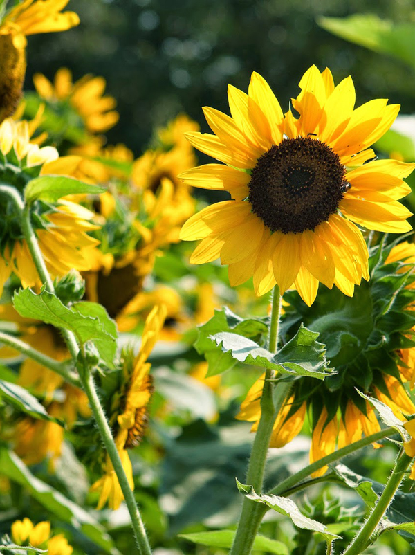

昭和記念公園 四季→夏 エリア→東京西部

このスポットには
東京都立川市にある昭和記念公園は春の桜でも有名ですが、夏にはひまわりが咲き乱れます。広大な敷地に咲くひまわりの数は約5万本！ひまわりの迷路でかくれんぼができるほど。ひまわりだけでなく、広大な敷地には他にも楽しみがいっぱい。園内のこどもの森でトランポリンをしたり、プールで泳いだり、レンタサイクルでサイクリング、ドッグランなど。きっと夏休みのいい思い出にもなりますね。（https://da-inn.com/syowakinenkouenhimawari-15695/ より抜粋）
このスポットには
こんな歴史が・・・
元米軍立川基地跡地。昭和天皇在位50周年記念事業の一環として建設される。
所在地
東京都立川市緑町3173
最寄り駅
JR中央本線 立川駅